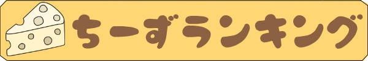
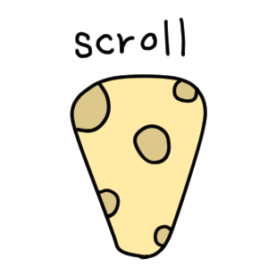
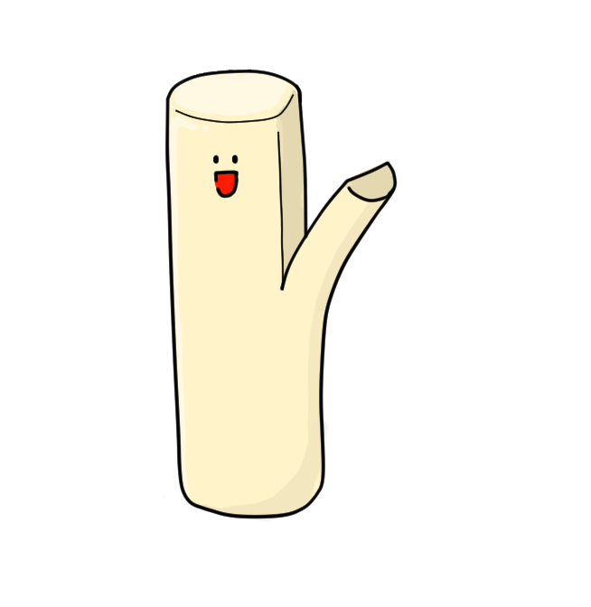
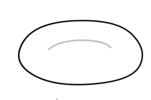
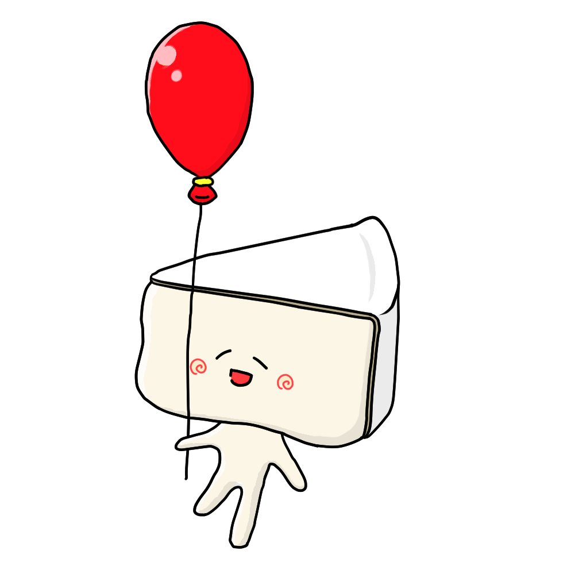
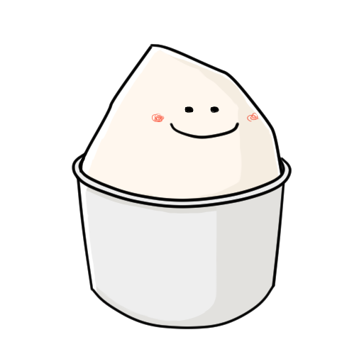
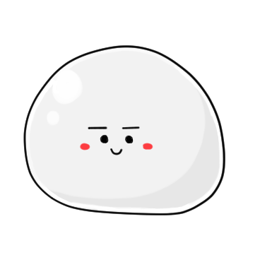
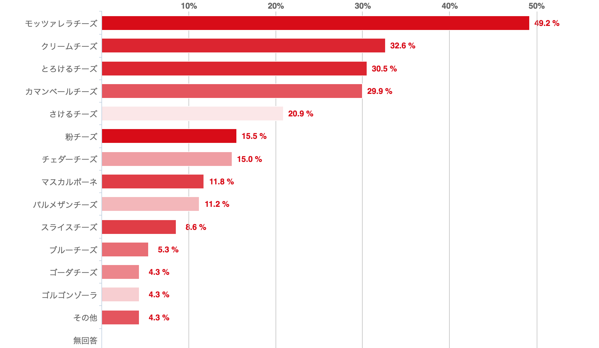

下に進むと、キャラクターがランキング台にあらわれるよ！

第5位！ さけるチーズ


みんな大好き！面白く食べれるれるさけるチーズがランクイン！
さけるチーズは、熟成させないタイプのナチュラルチーズで、チーズの中のたんぱく質が完全に分解されていない状態になっています。
それをあたためて、伸ばし冷やすことで、たて方向に気持ちよくさけるようになります。
これは、たんぱく質が伸ばした方向にきれいに並ぶからだと考えられています。
第4位！ カマンベールチーズ
白カビがおいしい？！カマンベールチーズがランクイン！
カマンベールは、トロリとした濃厚な味わいです。上品でクリーミーな味のチーズです。
内部はクリーム色で、熟成が進んだものはトロリとしているため、本来は丸い木箱に詰めて型崩れを防ぎます。
古来の熟成させるタイプのものは時が経つにつれ白カビのたんぱく分解によって風味が強まり、生地もトロリとなめらかになっていきます。

第3位！ とろけるチーズ！
家庭のおとも、とろけるチーズが第３位！！
トースターやドリア、ピザなど家庭の料理にかかせないプロセスチーズです。
とろけるチーズは、普通のチーズに比べて熟成期間が短いという違いがあります。
さらに、製造過程で使用される「乳化剤」の種類と量も違いがあります。
第2位！ クリームチーズ！
なんと！！レアチーズケーキなどでおなじみのクリームチーズが第二位！！
原産地は不明です、世界で最古のチーズの一つといわれています。
クリームチーズは非熟成タイプの白くて、柔らかくきめ細かいチーズです。
チーズの中ではタンパク質が少なく、乳酸菌由来の酸味と乳脂肪の豊かな味わいで、なめらかな舌ざわりが特徴です。

第一位！ モッツァレラチーズ！

ちょっと贅沢？！イタリアンによく合うモッツァレラチーズが第一位！
モッツァレラは白く丸いかたまりの形をしたチーズです。
見た目は表面がツルツルと滑らかで、よく「つきたてのお餅のよう」と表現されます。
押すと少し弾力があります。熱を加えるとトロリとして、モッツァレラ独特の糸引きが楽しめるので、ピザなどにもよく使われます。
ご協力ありがとうございました。

今回のサイトを作るにあたって、200人以上の方に協力していただきました。誠にありがとうございます。なお、最終結果はこのようになっております。